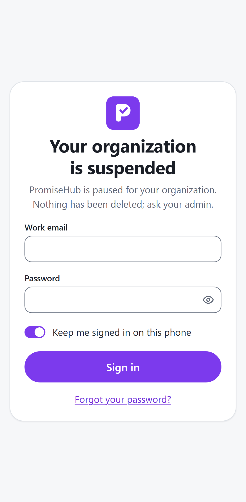
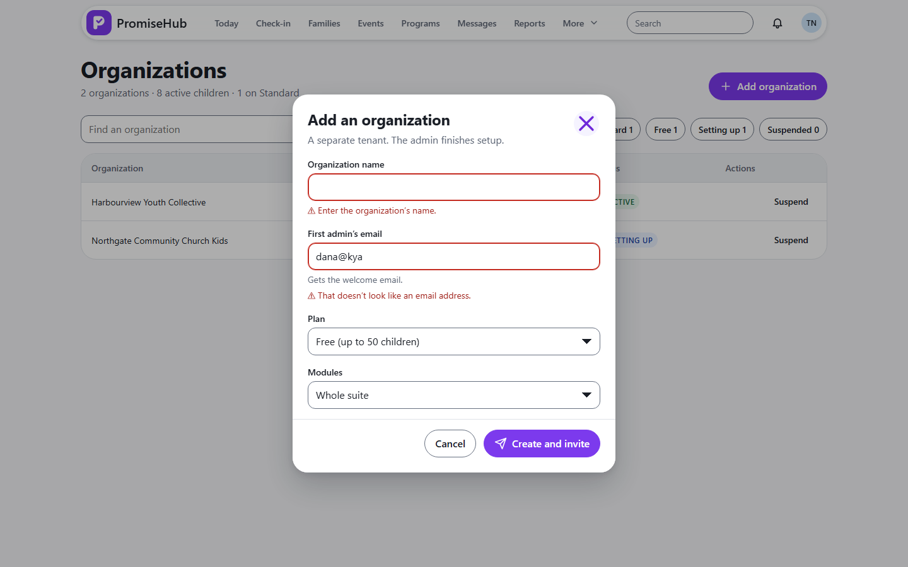

PromiseHub · Video 47
Manage organizations
Every tenant, from one list
Every tenant, from one list
Starts setting up.
Nothing deleted.


| Case | Answer |
|---|---|
| Suspended staff | 403 suspended |
| Queued messages | Wait, not sent |
| Not a platform admin | 403 |
Next: operational readiness